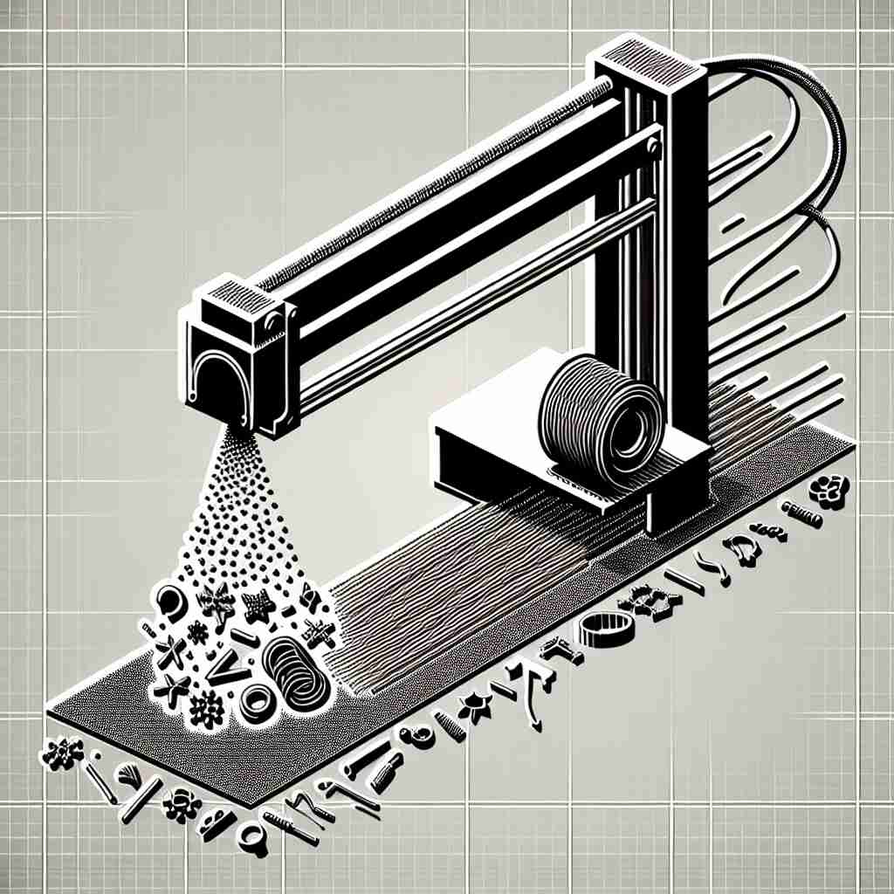

💬 The extrusion of the paste makes it easy to use. 挤压糊状物使其易于使用。

💬 The machine is used in the extrusion process to create different shapes. 这台机器用于挤出工艺来创造不同的形状。
💬 The extrusion of the paste makes it easy to use. 挤压糊状物使其易于使用。
💬 The machine is used in the extrusion process to create different shapes. 这台机器用于挤出工艺来创造不同的形状。
🧠 想象一个挤压的动作，将某物从狭小的开口"挤出"。这个核心概念贯穿了'extrusion'的各种用法，无论是在制造业、地质学还是生物学中。通过联想这个"挤出"的过程，你可以更容易理解和记忆这个词的多重含义。
🗝️ n. the process of forcing or pushing something out, especially through a small opening 挤出或推出某物的过程，特别是通过一个小开口。
🎭 在一个科学实验室里，研究人员正在观察一个管道装置。液体通过细小的喷嘴被挤压出来，形成细长的流线。这个过程展示了'extrusion'作为通过小孔挤压或推出物质的含义。
💬 The extrusion of toothpaste from its tube is a common everyday example of this process. 挤出牙膏的过程是这一过程的一个常见日常例子。
🌳 由前缀 "ex-"（表示向外）和词根 "trus"（推，挤）以及名词后缀 "-ion" 组成，形成一个名词，表示 "挤出，推出" 的过程。
💡 记忆 "extrusion" 时，可以联想为 "exit+trusion"，即推到外面的过程。在脑海中想象从管道中挤出东西的画面，有助于记住这个词的意思。
🗝️ n. a manufacturing process where material is pushed through a die to create objects with a fixed cross-sectional profile 一种制造工艺，将材料通过模具推送以创建具有固定横截面轮廓的物体。
🎭 在一个塑料工厂里，一位工厂工人正在使用一台大型机器。塑料被加热并推挤过一个模具，形成连续的管道。这就像是在用挤压法制造固定截面的产品，完美展示了'extrusion'在制造过程中的应用。
💬 Plastic pipes are often produced through extrusion. 塑料管通常通过挤出法生产。
🤔 基于核心含义，将材料"挤出"通过模具
🗝️ n. in geology, the process by which magma is forced out onto the Earth's surface as lava 在地质学中，岩浆被迫喷出到地球表面形成熔岩的过程。
🎭 在火山地区，游客们注视着熔岩缓缓流出火山口，炽热的岩浆在大地表面形成细长的熔岩流。这个壮观的景象清晰地体现了'extrusion'在地质学中火山喷发的过程。
💬 Volcanic extrusion can lead to the formation of new land masses. 火山喷发可以导致新陆地的形成。
🤔 岩浆被"挤出"地表的过程
🗝️ n. in biology, the process of cells pushing out unwanted materials 在生物学中，细胞排出不需要材料的过程
🎭 在显微镜下，科学家观察到细胞将废物'挤压'出膜外，就像在排出体内不需要的成分一样。这个生物学过程展示了'extrusion'作为细胞推出不需要物质的含义。
💬 The extrusion of waste products is essential for cellular health. 废物的挤出对细胞健康至关重要。
🤔 细胞将不需要的物质"挤出"体外
🗝️ n. something that has been extruded; a protruding part 一种被挤压出的物体; 一个突出的部分
🎭 在建筑工地上，一位工程师指着一根从墙壁上突出出来的管道，对施工团队解释如何处理这些多余的部分。这根管道正是'extrusion'作为凸出部分的一个例子。
💬 The architect designed the building with several angular extrusions. 建筑师设计了这座建筑，带有多个角状突起。
🤔 被"挤出"的结果或突出的部分